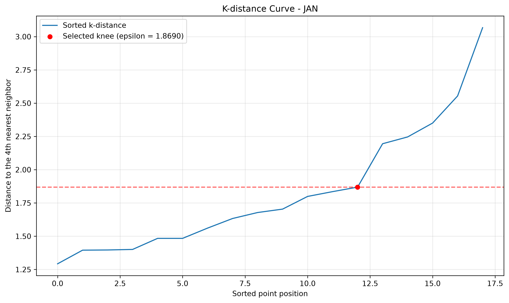
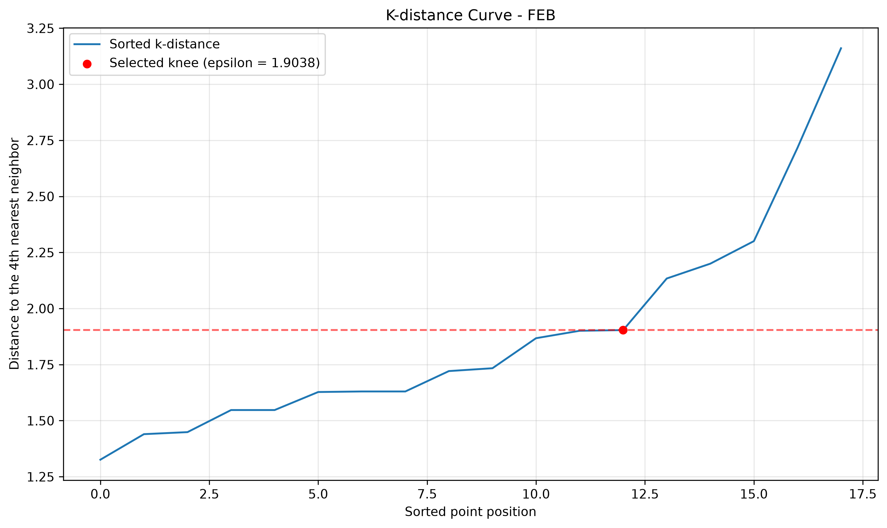
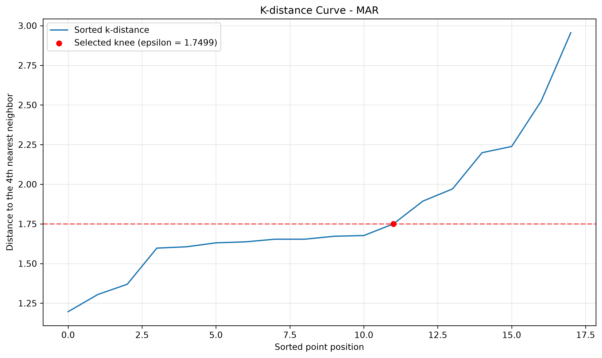
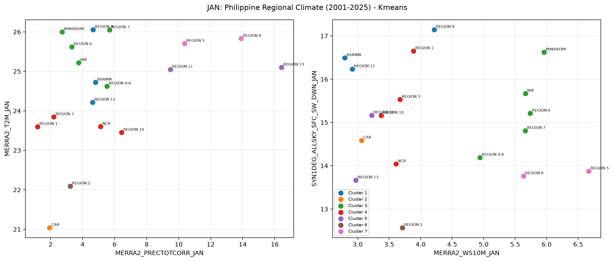
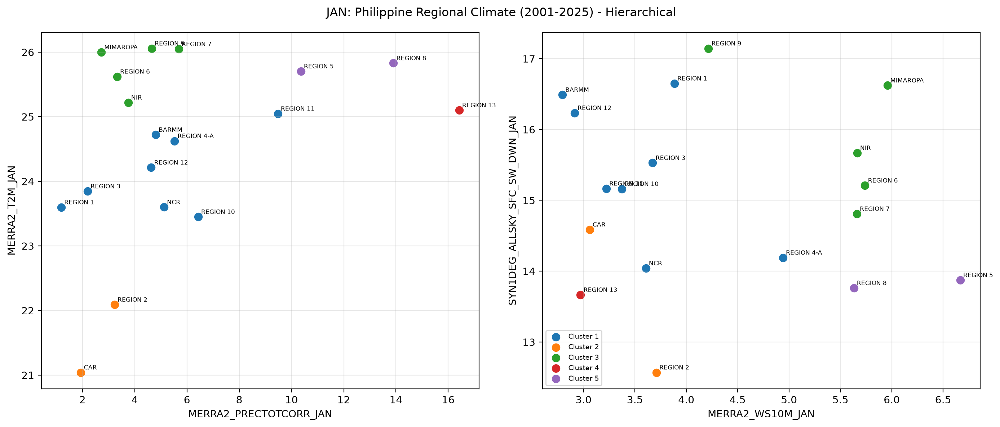
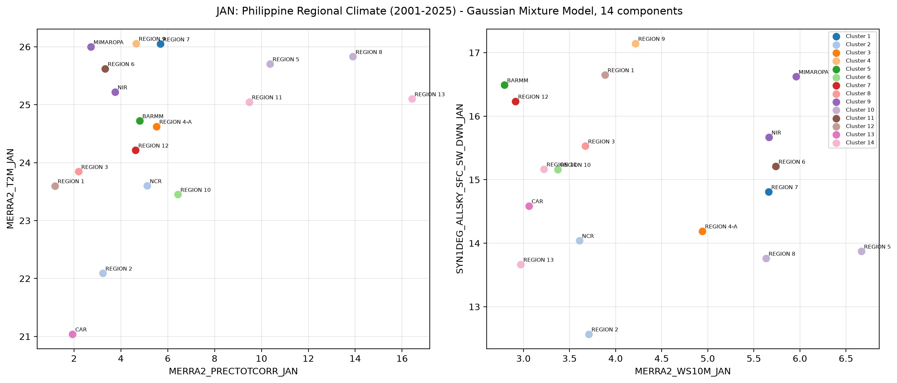
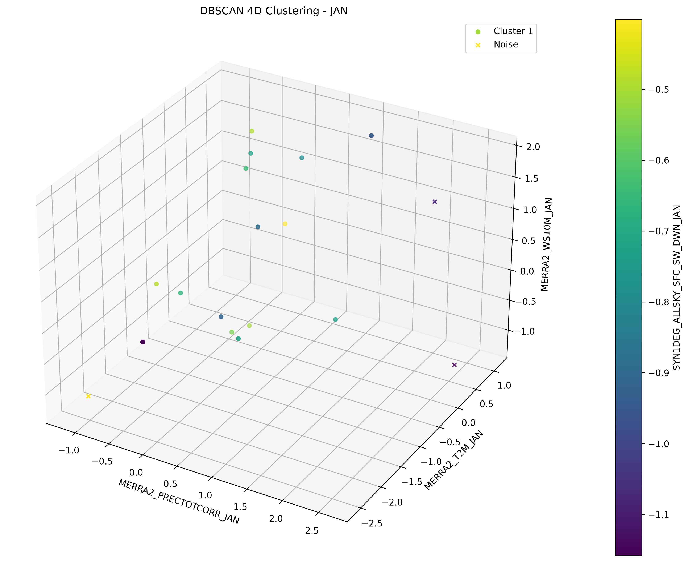

Methodology
Overview
flowchart TD A([Start]) --> B[/Gather Data/] B --> C[Compute monthly regional averages and standardize four features] C --> D[Run clustering sweeps for each month] D --> E[K-means] D --> F[Hierarchical Clustering] D --> G[Gaussian Mixture Model] D --> H[DBSCAN] E --> I[Test different k values] F --> J[Test different dendrogram cuts] G --> K[Test different numbers of components] I --> M[Evaluate every candidate for each month] J --> M K --> M M --> N[Calculate twelve-month mean Silhouette and DBI] N --> O[Rank candidates and sum ranks] O --> P[Select final configurations and export results] H --> L[Calculate monthly epsilon with the maximum-deviation knee-selection heuristic] L --> Q[Use fixed MinPts = 5 and evaluate DBSCAN] Q --> R[Export epsilon, assignments, noise, and metrics] P --> S[Compare final assignments for each month] R --> S S --> T[Analyze monthly results] T --> U([End])
Data Gathering
The Philippine Archipelago is divided into its 18 administrative regions, which are then clustered based on the similarities of their climate. Climate is measured through four parameters: All Sky Surface Shortwave Downward Irradiance, Temperature at 2 Meters, Precipitation Average, and Wind Speed at 10 Meters. The 18 regions include the Negros Island Region, which was recently added to the archipelago [1].
The data was collected from NASA POWER LaRC through the RESTful APIs that it provides [2]. The quality of the collected data is limited by the resolution of the two grids on which the four chosen parameters lie. The first is the MERRA-2 grid, used for three of the four parameters, which are meteorological data sets with the code names T2M, PRECTOTCORR, and WS10M. This grid has a resolution of ½° latitude and ⅝° longitude [2]. The second is the SYN1deg grid, used for the radiation data set; in this paper, the only irradiance parameter is ALLSKY_SFC_SW_DWN. This grid has a resolution of 1° latitude and 1° longitude [2].
The set of grid cells collected for a region consists of the cells that contain a piece of land belonging to that region. However, because of the resolution of these grids and the maritime nature of the Philippines, the API may return cells containing substantial water areas, which could introduce inconsistencies in the data [3]. To resolve this, area-weighted spatial aggregation is applied [4]. The climate data from each selected grid cell is multiplied by its land-area weight and accumulated, then divided by the total weight for that region. This normalization also absorbs small floating-point differences, so that the total weight does not need to be exactly one.
Since there are thousands of undocumented islands in the archipelago, this paper only includes the islands documented in Faeldon's Philippines JSON maps GitHub repository, together with the region borders as of November 2026 [5]. Once the grid cells and their weighted data have been computed, they are compiled into a single CSV file for each region. In total, 18 CSV files (one per region) are generated by utilities/data_retriever.py and saved in gathered_data/regions.

Data Processing
After gathering the data, utilities/data_reader.py reads the regional CSV files from gathered_data/regions. The read_monthly_data() function computes the monthly datasets, while prepare_monthly_data() saves the shared processed files used by the clustering methods. The annual column (ANN) remains in the original records but is excluded from these monthly datasets.
The raw data is a dictionary whose keys are the region names and whose values are arrays of yearly parameter records. Each record contains "PARAMETER," "YEAR," "GRID_LAYER," the twelve monthly columns, and "ANN."
For each of the 12 months, the values of the four parameters (precipitation, temperature, wind, and solar) for each of the 18 regions from 2001 to 2025 are averaged by regional_average() and stored in a dictionary. This function returns an alphabetically sorted array of region names, an array of their monthly averages, and the headers following the format "GRID_PARAMETER_MONTH."
The monthly averages are then passed to standardize_data() to place the four parameters on comparable scales. For each parameter column, the function calculates the mean and standard deviation across the 18 regions. Each value is standardized by subtracting the column's mean and dividing by its standard deviation:
standardized value = (value − column mean) / column standard deviation
This prevents a parameter from dominating the distance calculations simply because its numerical values are larger [7]–[9]. If all regions have the same value for a column, its standardized values are set to zero to avoid division by zero. The original monthly averages are preserved separately.
Finally, read_monthly_data() returns four items: regions, monthly_values, monthly_headers, and monthly_averages. regions contains the alphabetically sorted region names, while the other three are dictionaries with keys from "JAN" to "DEC". Each monthly dataset contains 18 rows representing the regions and four columns representing precipitation, temperature, wind, and solar values. monthly_values contains the values standardized across regions for clustering, monthly_headers contains their corresponding column names ("GRID_PARAMETER_MONTH"), and monthly_averages keeps the averages in their original units.
Methods
This section describes the four clustering methods used to group the 18 Philippine regions according to their monthly climate profiles: K-Means, Agglomerative Hierarchical Clustering, Gaussian Mixture Model (GMM), and DBSCAN. Each method uses four climate variables: precipitation, temperature, wind speed, and solar irradiance. Clustering is performed independently for each month from January to December. The following subsections explain the implementation and configuration of each method.
Method 1: K-Means
K-means groups the 18 regions into k clusters and aims to minimize the sum of squared Euclidean distances between each region and the centroid of its assigned cluster [6]. Clustering is performed separately for each month, from January to December. In each run, every region is represented by four climate variables: precipitation, temperature, wind speed, and solar irradiance. These values are averaged over the period from 2001 to 2025 using read_monthly_data().
Since the four variables have different units and numerical ranges, each feature is standardized using z-scores across the regions before clustering. This ensures that no single parameter disproportionately influences the distance calculations [4,7]. The standardized value is computed as:
\[ z_{ij} = \frac{x_{ij} - \mu_j}{\sigma_j} \tag{1} \]where \(x_{ij}\) is the original value of feature \(j\) for region \(i\), \(\mu_j\) is the mean of feature \(j\) across all regions, and \(\sigma_j\) is its standard deviation.
Centroid Initialization
The algorithm implemented in kmeans_clustering.py begins by randomly selecting \(k\) distinct regions as the initial centroids. Each region is then assigned to its nearest centroid based on Euclidean distance. The distance between a region and a centroid is calculated as:
where \(\mathbf{x}_i\) represents the four-dimensional feature vector of region \(i\), and \(\boldsymbol{\mu}_j\) represents the centroid of cluster \(j\).
Cluster Assignment and Centroid Update
After calculating the distances, each region is assigned to the cluster whose centroid is closest to it. The centroid of each cluster is then updated by computing the mean of all feature vectors assigned to that cluster:
\[ C_i = \operatorname*{arg\,min}_{j \in \{1,\ldots,k\}} d(\mathbf{x}_i,\boldsymbol{\mu}_j) \tag{3} \] \[ \boldsymbol{\mu}_j = \frac{1}{|C_j|} \sum_{\mathbf{x}_i \in C_j} \mathbf{x}_i \tag{4} \]where \(C_i\) denotes the cluster assignment of region \(i\), and \(C_j\) represents the set of regions assigned to cluster \(j\). The assignment and centroid update steps are repeated until the centroids no longer change [6].
Selection of the Number of Clusters
The same value of \(k\) was used for all twelve monthly clustering runs. This value was selected by executing K-means over a range of candidate \(k\) values, ranking each candidate by its Silhouette Score and Davies-Bouldin Index, and choosing the \(k\) with the lowest combined rank [15,20] (see Evaluation Metrics and Evaluation Procedure).
Random Seed and Reproducibility
The final clustering results depend heavily on the initial centroid positions, as an unfavorable initialization may lead the algorithm to a local minimum [6]. To ensure that all group members obtain identical results, the random number generator is initialized with a fixed seed of \(170\) before clustering. This causes the generator to produce the same sequence of random values across runs, allowing members using the same environment to select the same initial regions and obtain reproducible clusters [10].
However, seeding only improves reproducibility and does not guarantee better clustering results. Since only one run is performed per month, each result reflects a single set of initial centroids, which may not produce the best possible grouping [6]. Furthermore, random sequences may differ across Python versions [10], so all group members should use the same Python version to maintain consistency.
Visualization of Clustering Results
Since the four climate variables cannot be directly represented in a traditional two-dimensional scatter plot, the clustering results for each month are visualized using two separate scatter plots. The first plot presents precipitation against temperature, while the second presents wind speed against solar irradiance.
The points in both plots are colored according to the cluster assignments obtained from the full four-dimensional clustering process. Thus, each plot provides a two-dimensional view of the same clustering result, displaying only two of the four climate variables. The two plots should therefore be interpreted together when examining the monthly clustering results.
Method 2: Hierarchical Clustering
The Python file hierarchical_clustering.py implements agglomerative hierarchical clustering, which begins by treating each observation as an individual cluster and repeatedly merges the closest clusters to construct a hierarchy [11]. The resulting hierarchy is represented through a tree diagram called a dendrogram [12].
The program starts with main(), which calls read_monthly_data() to obtain the preprocessed datasets. It then prompts the user to specify the number of clusters (\(k\)) and the linkage method to be used across all twelve monthly datasets.
Distance Calculation
The euclidean_distance() function measures the climate difference between two regions using their four climate variables: precipitation, temperature, wind speed, and solar irradiance. The Euclidean distance between two regions is calculated as:
where \(a\) and \(b\) represent the four-dimensional climate feature vectors of two regions, and \(a_i\) and \(b_i\) represent their respective values for feature \(i\).
Average Linkage
Average linkage is selected to calculate the distance between clusters because it considers all pairwise distances between observations belonging to two clusters, providing an overall measure of their climate differences. The average linkage distance between clusters \(A\) and \(B\) is calculated as:
\[ D(A,B) = \frac{1}{|A||B|} \sum_{a \in A} \sum_{b \in B} d(a,b) \tag{6} \]where \(A\) and \(B\) represent two clusters, \(|A|\) and \(|B|\) denote the number of observations in each cluster, and \(d(a,b)\) is the Euclidean distance between observations \(a\) and \(b\).
Average linkage is a compromise between single and complete linkage and has been used in climatic regionalization [11,12].
Cluster Merging
The hierarchical_clustering() function repeatedly identifies and merges the two clusters with the smallest average linkage distance. At each iteration, the program records the IDs of the merged clusters, the distance at which they were joined, and the number of regions in the resulting cluster.
Initially, each of the 18 regions forms its own cluster. During each iteration, the number of clusters decreases by one as the closest pair is merged. When the number of remaining clusters reaches the user-specified value of \(k\), the program saves the corresponding cluster assignments. However, it continues merging the remaining clusters to construct the complete hierarchy. The function returns both the selected cluster assignments and the complete merge history.
Dendrogram Visualization
The draw_dendrogram() function uses the recorded merge history to generate a dendrogram for each month, producing twelve diagrams in total. Each dendrogram displays the 18 region names along the horizontal axis, while the vertical axis represents the average linkage distance at which clusters were merged [13].
Cluster labels are also displayed alongside the region names. For example, a label such as CAR (C1) indicates that the Cordillera Administrative Region belongs to Cluster 1. Changing the value of \(k\) affects the cluster assignments and corresponding labels, but does not change the underlying dendrogram for the same dataset and linkage method.
Output Generation
Finally, the write_output() function saves the resulting cluster assignments, original monthly averages, standardized values, merge history, and cluster summary. These outputs provide the data needed to examine the clustering results and interpret the hierarchical relationships among the regions.
Method 3: Gaussian Mixture Model (GMM)
The Gaussian Mixture Model (GMM) is an unsupervised learning algorithm that represents the data as a mixture of multiple Gaussian distributions. The implementation follows an iterative process consisting of parameter initialization, the Expectation step, the Maximization step, and a convergence test.
Step 0: Define the Parameters
Given a dataset containing \(N\) observations, define the number of Gaussian components \(K\) and the convergence tolerance \(\epsilon\). Each component is characterized by its mean vector, covariance matrix, and mixing weight.
Step 1: Parameter Initialization
Initialize the parameters of the Gaussian components before performing the iterative optimization process. The initial means are selected by randomly sampling \(K\) distinct observations from the dataset without replacement. Each component is assigned an equal mixing weight [14], [15]:
\[ \pi_k = \frac{1}{K} \tag{7} \]
The initial covariance matrices are set using the global population covariance matrix of the dataset. This provides a common estimate of the overall data dispersion for all Gaussian components.
Alternatively, K-means clustering can be used to initialize the component means using its cluster centroids. However, random initialization was selected to maintain the independence of GMM from the K-means implementation during the algorithm comparison.
Step 2: Expectation Step (E-step)
Calculate the responsibility of each Gaussian component for every observation. The responsibility represents the posterior probability that observation \(x_i\) belongs to component \(k\), given the current parameter estimates.
\[ \gamma_{ik} = \frac{ \pi_k \mathcal{N}(x_i \mid \mu_k, \Sigma_k) }{ \sum_{j=1}^{K} \pi_j \mathcal{N}(x_i \mid \mu_j, \Sigma_j) } \tag{8} \]
where \(\gamma_{ik}\) is the responsibility of component \(k\) for observation \(x_i\), \(\pi_k\) is its mixing weight, \(\mu_k\) is its mean vector, and \(\Sigma_k\) is its covariance matrix.
Step 3: Maximization Step (M-step)
Update the parameters of each Gaussian component using the responsibilities calculated during the E-step. First, calculate the effective number of observations assigned to each component:
\[ N_k = \sum_{i=1}^{N} \gamma_{ik} \tag{9} \]
The mean vector of each component is updated using the weighted average of the observations:
\[ \mu_k = \frac{1}{N_k} \sum_{i=1}^{N} \gamma_{ik}x_i \tag{10} \]
The covariance matrix is updated using the weighted deviations of the observations from the updated mean:
\[ \Sigma_k = \frac{1}{N_k} \sum_{i=1}^{N} \gamma_{ik} (x_i-\mu_k)(x_i-\mu_k)^T \tag{11} \]
Finally, update the mixing weight of each component based on its effective number of observations:
\[ \pi_k = \frac{N_k}{N} \tag{12} \]
Step 4: Convergence Test
Evaluate the log-likelihood of the dataset using the updated parameters:
\[ \mathcal{L} = \sum_{i=1}^{N} \log\left( \sum_{k=1}^{K} \pi_k \mathcal{N}(x_i \mid \mu_k, \Sigma_k) \right) \tag{13} \]
Compare the current log-likelihood with the value from the previous iteration. If the absolute difference is less than the specified convergence tolerance, the algorithm terminates. Otherwise, repeat the E-step and M-step until convergence is achieved.
Final Cluster Assignment
Once the algorithm converges, assign each observation to the Gaussian component with the highest responsibility:
\[ C_i = \arg\max_{k \in \{1,\ldots,K\}} \gamma_{ik} \tag{14} \]
The resulting cluster assignments are then written to the output file using the write_output() function.
Method 4: DBSCAN Clustering
Data Representation and Preparation
The Density-Based Spatial Clustering of Applications with Noise (DBSCAN) algorithm was implemented to group Philippine regions according to the similarity of their monthly climate profiles. Each region was represented as a multidimensional data point, with its coordinates corresponding to the values of four climate parameters: 2-meter temperature (T2M), corrected precipitation (PRECTOTCORR), wind speed at 10 meters (WS10M), and downward shortwave solar radiation at the surface (ALLSKY_SFC_SW_DWN).
The implementation processes each month independently. For a given month, the corresponding climate values of each region are retrieved and represented as a point in a four-dimensional feature space. Each point is assigned the following attributes: its corresponding region, climate coordinates, core-point status, list of neighboring points, and cluster assignment. Initially, all points are assigned a cluster identifier of -1, indicating that they have not yet been assigned to a cluster.
Euclidean distance is used to measure the similarity between two points in the feature space. Given two points \(p\) and \(q\), each containing \(d\) climate attributes, their Euclidean distance is calculated as:
\[ d(p,q) = \sqrt{ \sum_{i=1}^{d}(p_i-q_i)^2 } \tag{15} \]
where \(p_i\) and \(q_i\) represent the values of the \(i\)-th climate parameter of points \(p\) and \(q\), respectively. A smaller distance indicates greater similarity between the climate profiles of two regions.
Parameter Configuration
DBSCAN requires two parameters: the neighborhood radius \(\varepsilon\) (epsilon) and the minimum number of points required to form a dense region, \(\text{MinPts}\). The epsilon parameter determines the maximum distance between two points for them to be considered neighbors, while \(\text{MinPts}\) determines the minimum neighborhood population required for a point to be classified as a core point.
In this implementation, \(\text{MinPts}\) was set to 5 based on the dimensionality of the dataset. A general guideline for selecting \(\text{MinPts}\) is to use a value greater than or equal to the number of dimensions plus one, expressed as:
\[ \text{MinPts} \geq D+1 \tag{16} \]
Since each observation in this study is represented by four climate parameters, the minimum value is therefore 5. The selected \(\text{MinPts}\) value is applied consistently across all monthly datasets. However, the epsilon parameter is determined separately for each month using its corresponding \(k\)-distance distribution. This allows the neighborhood radius to reflect the distribution of climate profiles within each monthly dataset rather than applying a single fixed epsilon value throughout the year.
Since the implementation excludes the point itself from its stored neighbor list, the core-point condition is expressed as:
\[ |N_{\varepsilon}(p)|+1 \geq \text{MinPts} \tag{17} \]
where \(N_{\varepsilon}(p)\) denotes the set of neighboring points of \(p\) within the specified epsilon radius. Consequently, a point must have at least four other neighboring points to satisfy the \(\text{MinPts}\) requirement.
Epsilon Estimation Using the k-Distance Graph
Epsilon strongly affects the resulting cluster structure and the number of observations classified as noise, so it was estimated from the \(k\)-distance graph, which shows the distance of each observation to its \(k\)-th nearest neighbor [16], [17].
In this implementation, the \(k\)-distance of each point is calculated using its distance to the fourth-nearest neighboring point. This corresponds to \(k=4\), since \(\text{MinPts}\) is set to 5 and the point itself is excluded from the distance calculations. The distances are calculated using (15) and sorted in ascending order for each point. The resulting \(k\)-distance values are then sorted across all points to generate the \(k\)-distance graph.
Let \(d_k(p)\) denote the distance from point \(p\) to its \(k\)-th nearest neighbor. The sorted \(k\)-distance sequence is represented as:
\[ K = \operatorname{sort} \left( d_k(p_1), d_k(p_2), \ldots, d_k(p_n) \right) \tag{18} \]
where \(n\) is the number of data points and \(k=4\). The horizontal axis of the resulting graph represents the position of each point in the sorted sequence, while the vertical axis represents its corresponding \(k\)-distance.
To estimate epsilon, the implementation applies a maximum-deviation heuristic to the normalized \(k\)-distance graph. First, the horizontal and vertical coordinates are independently normalized to the interval \([0,1]\) using min-max normalization:
\[ x_i' = \frac{x_i-x_{\min}}{x_{\max}-x_{\min}} \tag{19} \]
\[ y_i' = \frac{y_i-y_{\min}}{y_{\max}-y_{\min}} \tag{20} \]
where \(x_i\) and \(y_i\) represent the original coordinates of the \(k\)-distance graph, and \(x_i'\) and \(y_i'\) represent their normalized values.
The deviation at each position is then calculated as:
\[ D_i = x_i'-y_i' \tag{21} \]
The index corresponding to the maximum deviation is selected as the estimated knee position:
\[ i^* = \operatorname*{arg\,max}_{i} D_i \tag{22} \]
Finally, the epsilon value is obtained from the original, unnormalized \(k\)-distance sequence at the selected index:
\[ \varepsilon = K_{i^*} \tag{23} \]
This procedure is a simplified version of the Kneedle algorithm [18]: it omits Kneedle's local-maximum detection and sensitivity thresholding, and is therefore treated as a maximum-deviation knee-selection heuristic rather than a direct implementation of Kneedle.
Neighborhood Identification
After determining epsilon, the implementation identifies the neighborhood of each point by calculating its Euclidean distance from every other point in the dataset. A point \(q\) is considered a neighbor of point \(p\) when the distance between them is less than or equal to epsilon:
\[ N_{\varepsilon}(p) = \left\{ q \mid q \neq p,\ d(p,q)\leq\varepsilon \right\} \tag{24} \]
The condition \(q \neq p\) ensures that a point is not included in its own stored neighbor list. Each identified neighbor is stored in the corresponding point object for subsequent core-point identification and cluster expansion.
The implementation performs an exhaustive pairwise comparison between points. Thus, every point is compared with all other points in the monthly dataset to determine its epsilon-neighborhood.
Core-Point Identification
Once the neighborhoods have been established, each point is evaluated according to the \(\text{MinPts}\) requirement. A point is classified as a core point if its epsilon-neighborhood, including itself, contains at least five points. This is determined using (17).
Points that do not satisfy the \(\text{MinPts}\) requirement are not immediately classified as noise. They may still become members of a cluster if they are located within the neighborhood of a core point. Such points are classified as border points. A point that is neither assigned to a cluster nor reachable from any core point is ultimately classified as noise.
The implementation records the core-point status of each point to distinguish between points that can expand a cluster and those that can only be assigned to an existing cluster.
Cluster Formation and Expansion
After identifying the core points, the implementation constructs clusters through a queue-based expansion procedure. Each unassigned core point is considered as a starting point for a new cluster. A new cluster identifier is generated, and the starting point is assigned to that cluster.
The algorithm then places the starting point's neighbors into a queue for exploration. Each retrieved neighbor is checked to determine whether it has already been visited. If it has not been visited, it is marked as visited and assigned to the current cluster if it remains unassigned.
The expansion process depends on the classification of the retrieved point. If the point is a core point, its neighbors are added to the queue for further exploration. This allows the cluster to expand through points that satisfy the density requirement. Conversely, if the retrieved point is a border point, it is assigned to the current cluster but does not contribute additional neighbors to the expansion process.
This procedure continues until the queue becomes empty, indicating that no additional density-reachable points can be added to the current cluster. The implementation then proceeds to the next unassigned core point and repeats the process until all core points have been examined.
After all clusters have been formed, points that remain unassigned are classified as noise. Cluster identifiers are initially assigned starting from zero during processing. For the exported results and visualizations, cluster identifiers are incremented by one so that the clusters are numbered starting from 1, while noise points retain the identifier -1.
Evaluation Metrics
The clustering results were evaluated using two internal validation metrics, the Silhouette Score and the Davies-Bouldin Index, which assess cluster cohesion and separation without requiring ground-truth labels.
Metric 1: Silhouette Score
The Silhouette Score quantifies how well each observation fits its assigned cluster by contrasting its within-cluster cohesion with its separation from the nearest other cluster [19]. It ranges from −1 to +1: values near +1 indicate compact, well-separated clusters, values near 0 indicate borderline assignments, and negative values indicate possible misclassification [20]. Higher values are better.
Metric 2: Davies-Bouldin Index
The Davies-Bouldin Index (DBI) is the average similarity between each cluster and its most similar cluster, computed from cluster centroids and within-cluster dispersion [21]. Lower values indicate more compact and better-separated clusters.
Evaluation Procedure
The two metrics were used in two stages: first to select the hyperparameters of each algorithm, and then to compare the algorithms with one another.
Hyperparameter Selection: Cluster Count Evaluation
Because the two metrics can disagree on which configuration is best, rank aggregation was used to combine them [22]. In the Borda Count, alternatives are scored by their positions in each ranking, which is equivalent to choosing the lowest sum of ranks when all rankings contain the same alternatives [23].
Following this approach, candidate configurations were ranked independently according to the Silhouette Score and the Davies-Bouldin Index, and the two ranks were summed. This allowed both metrics to be considered without directly comparing their different numerical scales or optimization directions, and without introducing additional weighting parameters. The combined rank was defined as:
\[ R_{\text{total}}(i) = R_{\text{silhouette}}(i) + R_{\text{DBI}}(i) \tag{25} \]
where:
- \(R_{\text{silhouette}}(i)\) is the rank of configuration \(i\) based on Silhouette Score (the highest score receives rank 1);
- \(R_{\text{DBI}}(i)\) is the rank of configuration \(i\) based on Davies-Bouldin Index (the lowest value receives rank 1);
- \(R_{\text{total}}(i)\) is the combined rank.
For K-means, Hierarchical Clustering, and the Gaussian Mixture Model, each candidate was evaluated independently for all twelve months. The mean Silhouette Score and mean DBI across the twelve monthly runs were ranked, and the configuration with the lowest combined rank was selected for the final monthly assignments. This procedure was applied to these three algorithms because each assigns every observation to a cluster and their configurations can therefore be compared on the same set of observations.
DBSCAN was evaluated separately because its ability to label observations as noise means that different configurations are scored on different subsets of the data. Its configurations were therefore judged on both clustering quality and the proportion of observations classified as noise.
Algorithm Evaluation
The selected configuration of each of the four algorithms was then evaluated using the Silhouette Score and the Davies-Bouldin Index, with higher Silhouette Scores and lower DBI values indicating more favorable clustering. Disagreements between the two metrics were also examined to give a more balanced interpretation of algorithm performance.
Results and Discussion
Hyperparameter Selection
Each candidate was evaluated over the twelve monthly datasets. Silhouette ranks were assigned in descending order, whereas Davies–Bouldin Index (DBI) ranks were assigned in ascending order. The combined rank was calculated as \(R_{\text{total}}=R_{\text{silhouette}}+R_{\text{DBI}}\). Candidates with one or 18 clusters were not scoreable because the evaluator requires at least two clusters and fewer clusters than observations.
K-means
| k | Mean Silhouette | Silhouette Rank | Mean DBI | DBI Rank | Combined Rank |
|---|---|---|---|---|---|
| 2 | 0.312810 | 1 | 1.164936 | 16 | 17 |
| 3 | 0.307236 | 2 | 0.986892 | 15 | 17 |
| 4 | 0.238310 | 4 | 0.959069 | 13 | 17 |
| 5 | 0.233779 | 5 | 0.980065 | 14 | 19 |
| 6 | 0.224116 | 6 | 0.778658 | 12 | 18 |
| 7 | 0.254037 | 3 | 0.748100 | 11 | 14 |
| 8 | 0.222836 | 7 | 0.716185 | 9 | 16 |
| 9 | 0.158160 | 9 | 0.734436 | 10 | 19 |
| 10 | 0.168936 | 8 | 0.640483 | 8 | 16 |
| 11 | 0.130215 | 10 | 0.575627 | 7 | 17 |
| 12 | 0.063289 | 13 | 0.561377 | 6 | 19 |
| 13 | 0.090301 | 11 | 0.481587 | 5 | 16 |
| 14 | 0.089690 | 12 | 0.415727 | 3 | 15 |
| 15 | 0.059896 | 14 | 0.358684 | 2 | 16 |
| 16 | 0.003193 | 16 | 0.418088 | 4 | 20 |
| 17 | 0.005631 | 15 | 0.293723 | 1 | 16 |
The selected K-means configuration was \(k=7\), which obtained the lowest combined rank of 14.
Hierarchical Clustering
| k | Mean Silhouette | Silhouette Rank | Mean DBI | DBI Rank | Combined Rank |
|---|---|---|---|---|---|
| 2 | 0.328671 | 4 | 0.918713 | 16 | 20 |
| 3 | 0.341427 | 1 | 0.880397 | 15 | 16 |
| 4 | 0.329811 | 3 | 0.769549 | 14 | 17 |
| 5 | 0.330428 | 2 | 0.708875 | 13 | 15 |
| 6 | 0.313874 | 5 | 0.670377 | 12 | 17 |
| 7 | 0.305264 | 6 | 0.630031 | 11 | 17 |
| 8 | 0.291452 | 7 | 0.576765 | 10 | 17 |
| 9 | 0.277642 | 8 | 0.538124 | 9 | 17 |
| 10 | 0.250897 | 9 | 0.473054 | 8 | 17 |
| 11 | 0.228093 | 10 | 0.425814 | 7 | 17 |
| 12 | 0.221525 | 11 | 0.369311 | 6 | 17 |
| 13 | 0.199868 | 12 | 0.313817 | 5 | 17 |
| 14 | 0.163441 | 13 | 0.261766 | 4 | 17 |
| 15 | 0.121944 | 14 | 0.223346 | 3 | 17 |
| 16 | 0.092096 | 15 | 0.172521 | 2 | 17 |
| 17 | 0.047934 | 16 | 0.121436 | 1 | 17 |
The selected configuration was average linkage with \(k=5\), producing the lowest combined rank of 15.
Gaussian Mixture Model
| Components | Mean Silhouette | Silhouette Rank | Mean DBI | DBI Rank | Combined Rank |
|---|---|---|---|---|---|
| 2 | 0.185145 | 1 | 1.677515 | 15 | 16 |
| 3 | 0.166246 | 2 | 1.493098 | 13 | 15 |
| 4 | 0.064983 | 6 | 2.312229 | 17 | 23 |
| 5 | 0.117817 | 4 | 1.586110 | 14 | 18 |
| 6 | 0.015510 | 10 | 1.730008 | 16 | 26 |
| 7 | 0.124330 | 3 | 1.175442 | 11 | 14 |
| 8 | 0.089632 | 5 | 1.142721 | 10 | 15 |
| 9 | -0.020692 | 17 | 1.321926 | 12 | 29 |
| 10 | 0.024246 | 9 | 0.971675 | 9 | 18 |
| 11 | 0.049897 | 7 | 0.778536 | 8 | 15 |
| 12 | 0.011344 | 11 | 0.714504 | 7 | 18 |
| 13 | -0.002671 | 15 | 0.701542 | 5 | 20 |
| 14 | 0.041560 | 8 | 0.640926 | 4 | 12 |
| 15 | 0.001415 | 13 | 0.554175 | 3 | 16 |
| 16 | -0.017069 | 16 | 0.710780 | 6 | 22 |
| 17 | 0.009578 | 12 | 0.548298 | 2 | 14 |
| 18 | 0.001157 | 14 | 0.504812 | 1 | 15 |
The selected GMM configuration used 14 components. Its combined rank was 12, although its Silhouette Score was substantially lower than those of K-means and hierarchical clustering.
DBSCAN
| Month | Estimated epsilon | MinPts | Noise proportion | Non-noise clusters |
|---|---|---|---|---|
| JAN | 1.869036 | 5 | 0.166667 | 1 |
| FEB | 1.903757 | 5 | 0.055556 | 1 |
| MAR | 1.749886 | 5 | 0.111111 | 1 |
| APR | 2.063617 | 5 | 0.000000 | 1 |
| MAY | 1.831632 | 5 | 0.000000 | 1 |
| JUN | 1.814130 | 5 | 0.111111 | 1 |
| JUL | 2.317628 | 5 | 0.111111 | 1 |
| AUG | 2.253173 | 5 | 0.000000 | 1 |
| SEP | 1.756809 | 5 | 0.111111 | 1 |
| OCT | 2.088296 | 5 | 0.000000 | 1 |
| NOV | 2.211725 | 5 | 0.000000 | 1 |
| DEC | 2.300285 | 5 | 0.000000 | 1 |
DBSCAN produced one non-noise cluster in every month. Consequently, both internal metrics were undefined rather than zero, because the evaluator requires at least two non-noise clusters.
Per-Algorithm Results
The following table reports the cluster memberships for the selected configuration of each algorithm. Cluster numbers are method-specific labels; therefore, identical numbers in different algorithms do not imply identical clusters.
| Month | K-means, k=7 | Hierarchical, k=5 | GMM, 14 components | DBSCAN |
|---|---|---|---|---|
| JAN |
|
|
|
|
| FEB |
|
|
|
|
| MAR |
|
|
|
|
| APR |
|
|
|
|
| MAY |
|
|
|
|
| JUN |
|
|
|
|
| JUL |
|
|
|
|
| AUG |
|
|
|
|
| SEP |
|
|
|
|
| OCT |
|
|
|
|
| NOV |
|
|
|
|
| DEC |
|
|
|
|
K-means repeatedly isolated CAR and REGION 2, while BARMM, REGION 10, and REGION 12 frequently formed a recurring group. Hierarchical clustering produced more stable five-cluster structures, especially the repeated pair CAR–REGION 2 and the recurring MIMAROPA–NIR–REGION 6–REGION 7 grouping. GMM produced more fragmented assignments because its selected component count was large relative to the 18 observations. DBSCAN generally treated the dataset as one connected density component and therefore did not provide multi-cluster regionalization.
Algorithm Comparison
Table 5 compares the final assignments using the same standardized monthly feature tables. Higher Silhouette Scores and lower DBI values are preferable.
| Month | K-means Silhouette | K-means DBI | Hierarchical Silhouette | Hierarchical DBI | GMM Silhouette | GMM DBI |
|---|---|---|---|---|---|---|
| JAN | 0.237211 | 0.740501 | 0.307323 | 0.745944 | -0.003029 | 0.497826 |
| FEB | 0.219475 | 0.776734 | 0.316623 | 0.719418 | -0.133555 | 0.910970 |
| MAR | 0.295950 | 0.732794 | 0.371513 | 0.623518 | 0.007160 | 0.631936 |
| APR | 0.231611 | 0.656118 | 0.387185 | 0.736886 | 0.025690 | 0.985183 |
| MAY | 0.106758 | 0.826103 | 0.344247 | 0.685470 | 0.046856 | 0.619739 |
| JUN | 0.293780 | 0.698497 | 0.297471 | 0.685800 | 0.117770 | 0.647477 |
| JUL | 0.318262 | 0.696782 | 0.316551 | 0.669228 | 0.162494 | 0.443609 |
| AUG | 0.307012 | 0.693221 | 0.288588 | 0.604613 | -0.008992 | 0.599383 |
| SEP | 0.231320 | 0.895636 | 0.253734 | 0.813856 | 0.038496 | 0.661523 |
| OCT | 0.124721 | 0.741094 | 0.292793 | 0.727532 | 0.086404 | 0.653948 |
| NOV | 0.348348 | 0.739221 | 0.379304 | 0.768972 | 0.033055 | 0.581589 |
| DEC | 0.334000 | 0.780501 | 0.409811 | 0.725267 | 0.126367 | 0.457934 |
Across all months, hierarchical clustering obtained the highest mean Silhouette Score, 0.330428, followed by K-means at 0.254037 and GMM at 0.041560. GMM obtained the lowest mean DBI, 0.640926, followed by hierarchical clustering at 0.708875 and K-means at 0.748100. Thus, the metrics do not identify one universally superior algorithm.
The metrics disagree in several months. Hierarchical clustering had higher Silhouette Scores than K-means in January and April, but K-means had slightly lower DBI values in those months. The same pattern occurred in November. Conversely, GMM frequently produced the lowest DBI, but its Silhouette Scores were low or negative, indicating that its compactness/separation result was not accompanied by strong region-level assignment separation.
DBSCAN is not included in the comparable metric table because its Silhouette Score and DBI were undefined in every month: each result contained only one non-noise cluster. Its epsilon values, noise proportions, and undefined-score status are reported in the DBSCAN table in Section 1. The noise proportions ranged from 0.000000 to 0.166667 and should be interpreted as coverage information rather than as evidence of superior clustering quality.
Figures 2–4 show January through March examples of the k-distance graphs used with the maximum-deviation knee-selection heuristic.



These graphs are relevant because the selected knee is used to set DBSCAN's monthly epsilon, the maximum neighborhood distance for treating regions as neighbors. The maximum-deviation knee-selection heuristic therefore connects the distance structure of each month's standardized climate profiles to the resulting density-based assignments. Changes in the knee position can alter which regions qualify as core or border points and which are labeled as noise; this helps explain why the monthly noise proportions vary. In this analysis, the selected epsilons still produced one non-noise cluster in every month, so the graphs support the parameter-selection procedure but do not provide evidence that DBSCAN produced a multi-cluster regionalization.
The single major DBSCAN cluster is also related to the size of the dataset. Each monthly run contains only 18 regional observations in a four-dimensional standardized feature space, while MinPts is fixed at 5. With so few points, the selected epsilon can make most regions density-reachable through connected neighborhoods, causing DBSCAN to merge them into one non-noise cluster and label only a small number of observations as noise. This is a limitation of applying density-based clustering to a small sample: the method has limited information with which to distinguish separate density regimes, and its result is sensitive to small changes in epsilon or regional observations. Therefore, DBSCAN's one-cluster outcome should not be interpreted as proof that the Philippines has only one climate regime; it indicates that this parameterization and sample did not yield multiple density-separated groups.
Selected-Configuration Figures
The following figures show January outputs for the final configurations selected using the twelve-month mean combined ranks. They are presented separately from the January candidate-metric tables because the displayed assignments correspond to the final mean-based configurations.
Figure 5 shows the January K-means output for the selected \(k=7\) configuration.

Figure 6 shows the January hierarchical clustering output for the selected \(k=5\) configuration.

Figure 7 shows the January Gaussian Mixture Model output for the selected 14-component configuration.

Figure 8 shows the January DBSCAN output using the selected epsilon and MinPts configuration.

Climatological Interpretation
The recurring groupings should be interpreted as climate-profile similarities rather than as strict geographic boundaries. PAGASA describes the Philippine climate as tropical and maritime, with rainfall controlled by moisture-bearing winds, mountain systems, monsoon seasons, and tropical cyclones [24]. These controls provide a climatological basis for the observed month-to-month changes.
The repeated association of MIMAROPA, NIR, REGION 6, and REGION 7 in several methods is consistent with the possibility of shared maritime and seasonal rainfall influences across portions of the Visayas and adjacent island groups. The repeated grouping of BARMM, REGION 10, and REGION 12 may reflect similarities in southern Philippine temperature, rainfall, wind, and solar profiles. These statements are interpretations; the clustering metrics themselves establish only similarity in the four standardized variables.
CAR was frequently isolated by K-means and separated by hierarchical clustering. This is climatologically plausible because elevation can produce a strong temperature contrast: PAGASA reports substantially cooler conditions for Baguio than for low-elevation Philippine stations [24]. The result should nevertheless be treated cautiously because CAR is represented by an area-weighted grid-cell average rather than by a station-level elevation profile.
The changing membership of western, central, and eastern regions across months is also consistent with the seasonal reversal of monsoon influence and the country's established rainfall regimes. Related climate-regionalization studies have used clustering to reassess climate-region boundaries [25], [26], and a recent Philippine study similarly found that combining rainfall and temperature can produce climate zones that differ from traditional rainfall-only classifications [27]. The present results extend that interpretation by incorporating wind speed and solar irradiance, although the use of administrative-region averages prevents direct comparison with gridded climate zones.
Conclusion
The study applied K-means, Agglomerative Hierarchical Clustering, Gaussian Mixture Model (GMM), and DBSCAN to examine the monthly climate similarities of the 18 Philippine regions using precipitation, temperature, wind speed, and solar irradiance data from 2001 to 2025. Among the evaluated methods, Hierarchical Clustering achieved the highest mean Silhouette Score (0.330428), indicating comparatively better-defined and separated clusters, while GMM obtained the lowest mean Davies-Bouldin Index (0.640926), suggesting more favorable compactness and separation according to that metric. These results show that no single method consistently performed best across both measures. DBSCAN, meanwhile, produced only one non-noise cluster in every month, indicating that the selected parameters and limited number of observations were insufficient to identify multiple density-separated groups. Despite these limitations, the recurring regional groupings and their month-to-month changes provide insights into similarities in the climate profiles of different parts of the country. Overall, the findings demonstrate the potential of clustering techniques for exploring Philippine regional climate patterns, while emphasizing that the results should be interpreted as general similarities rather than definitive climate classifications, given the dataset's limited regional observations and spatial resolution.
References
- Philippine Statistics Authority, “Second Quarter 2024 PSGC Updates: Creation of the Negros Island Region and Correction of the Names of Two Barangays,” July 12, 2024. [Online]. Available: https://psa.gov.ph/content/second-quarter-2024-psgc-updates-creation-negros-island-region-and-correction-names-two. [Accessed: Nov. 3, 2026].
- P. Stackhouse, “NASA POWER | Docs | Methodology,” NASA, 2026. [Online]. Available: https://power.larc.nasa.gov/docs/methodology/. [Accessed: Nov. 3, 2026].
- Vento Maritime, “The Difference in Weather Between Land and Sea.” [Online]. Available: https://ventomaritime.dk/blog/difference-weather-between-land-and-sea. [Accessed: Nov. 15, 2026].
- Esri, “Spatial Aggregation—ArcGIS Insights Documentation.” [Online]. Available: https://doc.arcgis.com/en/insights/latest/analyze/spatial-aggregation.htm. [Accessed: Nov. 15, 2026].
- J. Faeldon, “philippines-json-maps,” version 1.1.1, GitHub, 2026. [Source code]. Available: https://github.com/faeldon/philippines-json-maps. [Accessed: Nov. 15, 2026].
- M. E. Celebi, H. A. Kingravi, and P. A. Vela, “A comparative study of efficient initialization methods for the k-means clustering algorithm,” Expert Systems with Applications, vol. 40, no. 1, pp. 200–210, 2013, doi: 10.1016/j.eswa.2012.07.021.
- C. Wongoutong, “The Impact of Neglecting Feature Scaling in K-Means Clustering,” PLOS ONE, vol. 19, no. 12, p. e0310839, Dec. 2024, doi: 10.1371/journal.pone.0310839.
- J. Raymaekers and R. H. Zamar, “Pooled Variable Scaling for Cluster Analysis,” Bioinformatics, vol. 36, no. 12, pp. 3849–3855, June 2020, doi: 10.1093/bioinformatics/btaa243.
- I. B. Mohamad and D. Usman, “Standardization and its effects on K-means clustering algorithm,” Research Journal of Applied Sciences, Engineering and Technology, vol. 6, no. 17, pp. 3299–3303, Sept. 2013, doi: 10.19026/rjaset.6.3638.
- Python Software Foundation, “random—Generate pseudo-random numbers,” Python 3 Documentation. [Online]. Available: https://docs.python.org/3/library/random.html. [Accessed: Nov. 3, 2026].
- D. Müllner, “Modern Hierarchical, Agglomerative Clustering Algorithms,” arXiv:1109.2378 [cs, stat], Sept. 2011. [Online]. Available: https://arxiv.org/abs/1109.2378. [Accessed: Nov. 3, 2026].
- F. Murtagh and P. Contreras, “Algorithms for Hierarchical Clustering: An Overview,” WIREs Data Mining and Knowledge Discovery, vol. 2, no. 1, pp. 86–97, Dec. 2011, doi: 10.1002/widm.53.
- scikit-learn, “Plot Hierarchical Clustering Dendrogram.” [Online]. Available: https://scikit-learn.org/stable/auto_examples/cluster/plot_agglomerative_dendrogram.html. [Accessed: Nov. 3, 2026].
- J. Noble, “What Is a Gaussian Mixture Model?,” IBM, Oct. 16, 2025. [Online]. Available: https://www.ibm.com/think/topics/gaussian-mixture-model. [Accessed: Nov. 10, 2026].
- scikit-learn, “GMM Initialization Methods,” 2024. [Online]. Available: https://scikit-learn.org/stable/auto_examples/mixture/plot_gmm_init.html. [Accessed: Nov. 10, 2026].
- GeeksforGeeks, “DBSCAN clustering in ML—Density based clustering,” May 2, 2026. [Online]. Available: https://www.geeksforgeeks.org/machine-learning/dbscan-clustering-in-ml-density-based-clustering/. [Accessed: Nov. 10, 2026].
- L. Yin, H. Hu, K. Li, G. Zheng, Y. Qu, and H. Chen, “Improvement of DBSCAN algorithm based on K-dist graph for adaptive determining parameters,” Electronics, vol. 12, no. 15, Art. no. 3213, July 2023, doi: 10.3390/electronics12153213.
- V. Satopää, J. Albrecht, D. Irwin, and B. Raghavan, “Finding a ‘Kneedle’ in a haystack: Detecting knee points in system behavior,” in Proc. 2011 31st Int. Conf. Distributed Computing Systems Workshops, 2011, pp. 166–171.
- P. J. Rousseeuw, “Silhouettes: A Graphical Aid to the Interpretation and Validation of Cluster Analysis,” Journal of Computational and Applied Mathematics, vol. 20, pp. 53–65, Nov. 1987, doi: 10.1016/0377-0427(87)90125-7.
- K. R. Shahapure and C. Nicholas, “Cluster Quality Analysis Using Silhouette Score,” in 2020 IEEE 7th International Conference on Data Science and Advanced Analytics (DSAA), Oct. 2020, doi: 10.1109/dsaa49011.2020.00096.
- D. L. Davies and D. W. Bouldin, “A Cluster Separation Measure,” IEEE Transactions on Pattern Analysis and Machine Intelligence, vol. PAMI-1, no. 2, pp. 224–227, Apr. 1979, doi: 10.1109/tpami.1979.4766909.
- P. Viappiani, “Characterization of Scoring Rules With Distances: Application to the Clustering of Rankings,” in Proc. IJCAI, pp. 104–109, 2015. [Online]. Available: https://ijcai.org/proceedings/2015/22. [Accessed: Nov. 4, 2026].
- M. Cebesoy, C. Tuncer Şakar, and B. Yet, “Multicriteria Decision Support Under Uncertainty: Combining Outranking Methods With Bayesian Networks,” Annals of Operations Research, vol. 355, no. 3, pp. 2971–2998, June 2024, doi: 10.1007/s10479-024-06064-8.
- Philippine Atmospheric, Geophysical and Astronomical Services Administration, “Climate of the Philippines,” Department of Science and Technology. [Online]. Available: https://www.pagasa.dost.gov.ph/index.php/information/climate-philippines.
- R. Lund and B. Li, “Revisiting Climate Region Definitions via Clustering,” Journal of Climate, vol. 22, no. 7, pp. 1787–1800, Apr. 2009, doi: 10.1175/2008jcli2455.1.
- S. Fiddes, A. Pepler, K. Saunders, and P. Hope, “Redefining Southern Australia’s Climatic Regions and Seasons,” Journal of Southern Hemisphere Earth Systems Science, vol. 71, no. 1, pp. 92–109, Mar. 2021, doi: 10.1071/es20003.
- L. M. P. Olaguera, E. K. Badua, A. G. A. Llorin, F. A. T. Cruz, J. R. T. Villarin, J. A. Manalo, M. Q. Villafuerte, and J. Matsumoto, “Rainfall and temperature-based Philippine climate zones using self-organizing maps,” Scientific Online Letters on the Atmosphere, vol. 21C, pp. 10–20, 2025, doi: 10.2151/sola.21C-002.
- P. Stackhouse, “NASA POWER | Docs | Tutorials | DAV,” NASA, 2022. [Online]. Available: https://power.larc.nasa.gov/docs/tutorials/data-access-viewer/user-guide/. [Accessed: Nov. 3, 2026].
- B. N. Yulisasih, H. Herman, S. Sunardi, and H. Yuliansyah, “Evaluation of K-Means Clustering Using Silhouette Score Method on Customer Segmentation,” ILKOM Jurnal Ilmiah, vol. 16, no. 3, pp. 330–342, Dec. 2024, doi: 10.33096/ilkom.v16i3.2325.330-342.
- Y. Januzaj, E. Beqiri, and A. Luma, “Determining the Optimal Number of Clusters Using Silhouette Score as a Data Mining Technique,” International Journal of Online and Biomedical Engineering, vol. 19, no. 4, pp. 174–182, Apr. 2023, doi: 10.3991/ijoe.v19i04.37059.
- Z. Teng, Y. Jun, L. Dandan, and P. Zhang, “When Does the Silhouette Score Work? A Comprehensive Study in Network Clustering,” arXiv:2512.24841v1, Dec. 2025. [Online]. Available: https://arxiv.org/abs/2512.24841v1. [Accessed: Nov. 3, 2026].
- J. Pavlopoulos, G. Vardakas, and A. Likas, “Revisiting Silhouette Aggregation,” arXiv:2401.05831v3, Jan. 2024. [Online]. Available: https://arxiv.org/abs/2401.05831v3. [Accessed: Nov. 3, 2026].
- Y. A. Wijaya, D. A. Kurniady, E. Setyanto, W. S. Tarihoran, D. Rusmana, and R. Rahim, “Davies Bouldin Index Algorithm for Optimizing Clustering Case Studies Mapping School Facilities,” TEM Journal, vol. 10, no. 3, pp. 1099–1103, Aug. 2021, doi: 10.18421/tem103-13.
- M. Mughnyanti, S. Efendi, and M. Zarlis, “Analysis of Determining Centroid Clustering X-Means Algorithm With Davies-Bouldin Index Evaluation,” IOP Conference Series: Materials Science and Engineering, vol. 725, no. 1, p. 012128, Jan. 2020, doi: 10.1088/1757-899x/725/1/012128.
- A. Anfossi and D. Chicco, “An Easy Guide to the Davies-Bouldin Index for Unsupervised Internal Clustering Evaluation,” Discover Computing, vol. 29, no. 1, Art. no. 212, Apr. 2026, doi: 10.1007/s10791-026-10094-0.
- L. W. Yerbury, R. J. G. B. Campello, G. C. Livingston, Jr., M. Goldsworthy, and L. O’Neil, “On the Use of Relative Validity Indices for Comparing Clustering Approaches,” ACM Transactions on Knowledge Discovery from Data, vol. 19, no. 8, pp. 1–53, Sept. 2025, doi: 10.1145/3748726.
- D. Chicco, G. Sabino, L. Oneto, and G. Jurman, “The DBCV Index Is More Informative Than DCSI, CDbw, and VIASCKDE Indices for Unsupervised Clustering Internal Assessment of Concave-Shaped and Density-Based Clusters,” PeerJ Computer Science, vol. 11, Art. no. e3095, Aug. 2025, doi: 10.7717/peerj-cs.3095.
- G. Marek, B. Maciej, and A. Cena, “Are Cluster Validity Measures (in)Valid?,” Aug. 2, 2022, doi: 10.1016/j.ins.2021.10.004.
- scikit-learn, “2.3. Clustering—scikit-learn Documentation.” [Online]. Available: https://scikit-learn.org/stable/modules/clustering.html. [Accessed: Nov. 10, 2026].